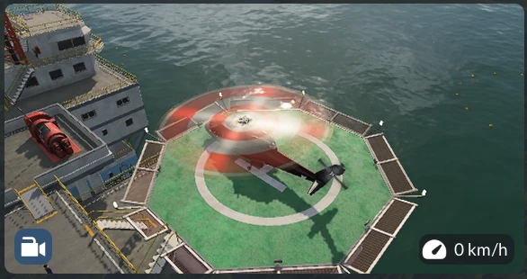

Bug Fix - Helicopter Pad Freeze
A helicopter that waits for a busy one-pad helipad can settle on it without ever arriving, blocking it for good. This mod sends it around to land again.

Free Frozen Helicopters
Setting: Free Frozen Helicopters · On by default
- 1Sitting on the pad, yet the game still counts it as flying there: it never unloads or boards.
- 20 km/h. Without help it stays like this, and every other helicopter for this platform circles.
Why
A helicopter that has to wait for a busy one-pad helipad, an oil platform's for example, hovers near it. When it finally comes in from that hover it can settle on the pad without ever arriving: it stays en route, never unloads or boards, and blocks the pad, so every helicopter bound for that platform circles forever. It happens most on short hops between platforms, where helicopters fly low.
What it does
The mod spots a frozen helicopter within seconds and does what the Reverse ("previous station") button does by hand: it reverses the helicopter off the pad and, once it is clear, reverses it again until it heads back for the same stop. It comes in again at speed and lands normally. If it freezes on the same pad again, it is sent on to the next stop instead.
How to use
- Subscribe and turn the mod on for your save.
- When a helicopter is freed, a small pop-up at the top of the screen says so; click it to jump to the helicopter.
Good to know
- The pop-up has its own setting, Notification, so the fix can work silently.
- Without the mod, the same Reverse button frees a frozen helicopter by hand, as does sending it to its depot.
- It keeps nothing in your save, so it can be removed at any time, for example once the game itself is fixed.
Settings
Choosing a save's mods: the gear next to Bug Fix - Helicopter Pad Freeze → Settings. Each save keeps its own choice. Off turns a feature off completely.
| Setting | Default | What it does |
|---|---|---|
| Free Frozen Helicopters | On | A helicopter frozen on a helipad is reversed off the pad and sent back to land again. |
| Notification | On | A pop-up each time a frozen helicopter is freed. |
| Logging | Off | Writes the mod's messages to the game log (stdout.txt), for bug reports. |
More
Compatibility
Works with any map and any other mod. The bug was found and the fix tested on game build 40425.
Changes
1.1: First release.